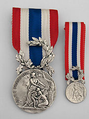

Reunión y aislamiento de un equipo deportivo antes de un partido.
Ejemplo:
El equipo realizó la concentración en los vestuarios.
Eslogan
Definición:
Frase publicitaria breve, ingeniosa y fácil de recordar.
Ejemplo:
Me encanta el eslogan del candidato.
Insignia
Definición:
Señal distintiva que se da a una persona en reconocimiento de sus logros
Ejemplo:
Tengo la insignia de oro del taller de pintura.
Inspiración
Definición:
Estímulo o influencia que permite la creación artística.
Ejemplo:
No he pintado nada nuevo porque me falta inspiración.
Podio
Definición:
Plataforma en la que se coloca una persona para ocupar una posición destacada.
Ejemplo:
El ganador subió al podio.
1. Este es mi equipo
Ya tenéis organizado vuestro equipo con una insignia que os representa, y donde aparece el nombre y el color elegido.
Es hora de presentaros al resto de equipos, pero antes debéis reflexionar sobre la información que váis a contar. Preparar un borrador que recoja el proceso que habéis seguido.
Realizar vuestro borrador en la plantilla “Este es mi equipo” del Diario Olímpico.
Cuando lo tengáis preparado elaborar una infografía. Una infografía es un resumen con imágenes, gráficos y poco texto, para que se pueda entender fácilmente. Podéis realizar una infografía digital como verdaderos profesionales. Para ello, hay algunos programas que te pueden ayudar. Si te atreves a usarlo aquí tienes más información.
Esta infografía os servirá de apoyo para la presentación del equipo al resto de la clase. Recuerda que en esta presentación tenéis que hablar todos los miembros del equipo.
Lectura facilitada
Tu equipo ha hecho una insignia.
La insignia tiene vuestro nombre, vuestro eslogan y vuestro color.
Ahora tienes que presentar tu equipo al resto de compañeros y compañeras.
Para hacer el borrador utiliza la plantilla “Este es mi equipo”.
La plantilla está en el Diario Olímpico.
Cuando termines el borrador haz una infografía.
Una infografía es un resumen con imagenes.
En una infografía hay pocas palabras.
La infografía puedes hacerla en formato digital.
Digital quiere decir utilizando el ordenador.
Hay programas de ordenador para hacer infografías.
Si quieres hacer la infografía digital pincha aquí.
La infografía te ayudará a presentar a tu equipo.
En la presentación tenéis que hablar todos los miembros del equipo.
Definición:
Buscar ideas para crear cosas.
Ejemplo:
No he pintado nada porque me falta inspiración.
Apoyo visual
2. Las 12 pruebas de Rétor
Ha llegado el momento de crear las pruebas para las Olimpiadas matemáticas. Estas Olimpiadas constan de 12 pruebas, las llamadas “Las 12 pruebas de Rétor”.
Tu y tu equipo sois los encargados de crear 12 pruebas para estas Olimpiadas. Recuerda que tu equipo elaborará las pruebas que tendrán que resolver otros equipos. De igual modo, vosotros os enfrentaréis a las pruebas diseñadas por otros grupos.
Para diseñar las pruebas tienes que tener en cuenta las indicaciones establecidas por “Rétor”.
Escribir las pruebas que habéis diseñado en la plantilla “Las 12 pruebas de Rétor” del Diario Olímpico.
Números de 6 cifras
PRUEBA 1:
Elige cuatro números de seis cifras para realizar su lectura.
PRUEBA 2:
Elige cuatro números de seis cifras para realizar la descomposición, expresada en suma de unidades y en el valor posicional que ocupa cada cifra.
PRUEBA 3:
Escribe la descomposición de cuatro números de seis cifras, para que tus compañeros y compañeras averigüen el número.
PRUEBA 4:
Elige cuatro números de seis cifras para realizar la aproximación a las centenas de millar.
Números ordinales
PRUEBA 5:
Inventa dos actividades de números ordinales.
Números romanos
PRUEBA 6:
Inventa dos actividades de números romanos.
Propiedades de la multiplicación
PRUEBA 7:
Inventa dos actividades en las tus compañeros tengan que utilizar la propiedad conmutativa de la multiplicación.
PRUEBA 8:
Inventa dos actividades en las que tus compañeros tengan que utilizar la propiedad asociativa de la multiplicación.
PRUEBA 9:
Inventa dos actividades en las que tus compañeros tengan que utilizar la propiedad distributiva de la multiplicación (Una respecto a la suma y otra respecto a la resta)
PRUEBA 10:
Inventa cuatro multiplicaciones en las que el resultado sea un número de seis cifras.
La división
PRUEBA 11:
Inventa cuatro divisiones con el divisor de dos cifras.
PRUEBA 12:
Inventa un problema de la vida real donde tengas que utilizar una división para su resolución.
Lectura facilitada
Ahora vas a crear las pruebas para las Olimpiadas matemáticas.
Estas Olimpiadas tienen 12 pruebas.
Las pruebas se llaman “Las 12 pruebas de Rétor”.
Tú y tu equipo tenéis que hacer 12 pruebas.
Tus compañeras y compañeros resolverán las pruebas que tu equipo elabore.
Tú y tu equipo resolveréis las pruebas que otros grupos hagan.
Escribe las pruebas en la plantilla “Las 2 pruebas de Rétor”
La plantilla está en el “Diario Olímpico”
Aquí tienes las instrucciones para hacer las pruebas:
Números de 6 cifras
Prueba 1:
- Elige 4 números de 6 cifras.
- Otros equipos tendrán que leer esos números.
Prueba 2:
- Elige 4 números de 6 cifras.
- Otros equipos tendrán que descomponer esos números.
- La descomposición hay que hacerla de 2 formas.
- Forma 1: Expresar la descomposición como suma de unidades.
- Forma 2: Expresar el valor posicional de cada cifra.
Prueba 3:
- Escribe la descomposición 4 números de 6 cifras.
- Otros equipos tienen que adivinar el número.
Prueba 4:
- Elige 4 números de 6 cifras.
- Otros equipos tienen que realizar la aproximación a la centena de millar.
Números ordinales
Prueba 5:
- Inventa 2 actividades de números ordinales.
Números romanos
Prueba 6:
- Inventa 2 actividades de números romanos
Propiedades de la multiplicación
Prueba 7:
- Inventa 2 actividades para utilizar la propiedad conmutativa.
Prueba 8:
- Inventa 2 actividades para utilizar la propiedad asociativa.
Prueba 9:
- Inventa 1 actividades para utilizar la propiedad distributiva con la suma.
- Inventa 1 actividad para utilizar la propiedad distributiva con la resta.
Prueba 10:
- Inventa 4 multiplicaciones.
- El resultado tiene que ser un número de 6 cifras.
La división
Prueba 11:
- Inventa 4 divisiones.
- El división tiene que ser de 2 cifras.
Prueba 12:
- Inventa un problema de la vida real. - El problema se resuelve con una división.
Apoyo visual
Aparece Motus. Motus dice ¿Te has dado cuenta de la cantidad de cosas que has tenido que hacer para completar la actividad?
Al realizar esta actividad has tenido que poner en juego todo lo que sabes. A veces para aprender tenemos que trabajar de forma constante. Cuando nos esforzamos mucho nuestro trabajo es valorado por nuestros profes y familias. Pero lo más importante es que nos sentimos muy contentos por el trabajo realizado.
Te animo a que sigas trabajando para que puedas aprender y seguir mejorando.
3. Las cartas olímpicas
Seguimos trabajando en grupo.
Ha llegado el momento de diseñar las cartas olímpicas. En esas cartas tenéis que recoger las pruebas que habéis diseñado en la actividad anterior, por lo que tenéis que hacer un total de 12 cartas. Para hacerlas tenéis que seguir las siguientes instrucciones:
CARA A: ANVERSO
Escribir la prueba correspondiente.
CARA B: REVERSO
Colorear las cartas del color de vuestro equipo. Escribir el nombre de vuestro grupo en el recuadro. Escribir el número de la prueba.
Reúnete con tu equipo y preparar vuestra zona de trabajo. Para ello podéis juntar varias mesas . Recuerda que cada equipo tiene que estar separado de los demás. No te olvides de identificar tu zona de trabajo con la insignia que habéis elaborado en la actividad “Equipos de Campeonato”.
Las reglas de las Olimpiadas:
Intercambiar las cartas olímpicas de vuestro equipo con otro grupo.
Poner las cartas bocabajo sobre la mesa, en vuestra zona de trabajo.
Cuando vuestra maestra o maestro os lo indique, coger la carta número 1.
Tenéis 10 minutos para resolver cada prueba en equipo.
Realizar los cálculos y las operaciones necesarias en la plantilla “Las Olimpiadas Matemáticas” del Diario Olímpico.
Cuando terminéis una prueba a tiempo y esté bien resuelta, recibiréis una pieza de un puzzle.
Cuando terminéis la prueba número 1, comenzar con la prueba número 2, y así sucesivamente.
Para resolver la prueba número 12 tendréis 15 minutos.
Los equipos que llegarán a lo más alto del podio serán los que consigan realizar el puzle completo, o tengan el mayor número de piezas, y descubran y el nombre del personaje escondido.
Lectura facilitada
¡A vuestros puestos!
¡Empiezan las Olimpiadas matemáticas!
Reúnete con tu equipo.
Tu y tu equipo preparar la zona de trabajo.
Para hacer la zona de trabajo tienes que juntar varias mesas.
Sepárate de otros equipos.
Identifica tu zona de trabajo con la insignia del equipo.
La insignia la elaboraste en la actividad “Equipos de Campeonato”.
Las reglas de las Olimpiadas son las siguientes:
Intercambia las cartas olímpicas con otro equipo.
Pon las cartas bocabajo sobre la mesa.
Tu maestra o maestro te dirá cuando tienes que empezar.
Primero coge la carta número 1.
Tienes 10 minutos para resolver la prueba en equipo.
Realiza los cálculos y las operaciones en la plantilla “Las Olimpiadas Matemáticas”.
La plantilla está en el “Diario Olímpico”.
Resuelve la prueba correctamente.
Tu maestra o maestro te dará una pieza de un puzzle cuando termines.
Has terminado la prueba número 1.
Ahora empieza la prueba número 2.
Para resolver la prueba número 12 tienes 15 minutos.
 Definición:
Definición:.jpg) Definición:
Definición: Definición:
Definición: